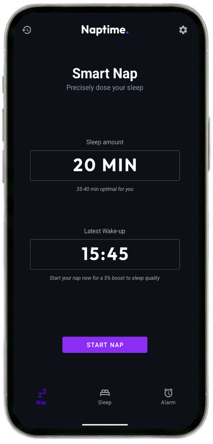
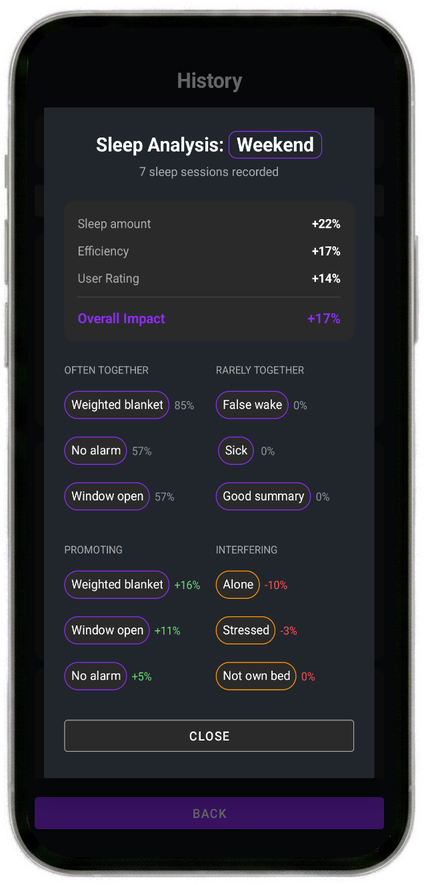

Label each session with the details that might matter, then spot what helps you fall asleep faster, wake up better, or protect your night sleep.
See whether caffeine timing makes it harder to start a nap.
Compare sleep quality across your real room conditions.
Find recovery patterns that show up after repeated sessions.
Naptime utilizes high-sensitivity accelerometer data to monitor your body movement. It distinguishes between "settling in" movements and the stillness of true sleep.
You asked for 20 minutes? You get 20 minutes. The countdown only starts once we confirm you're asleep, ensuring you get the full restorative benefit.
Set a latest wake-up time for any nap. Even if you never fall asleep, the alarm fires by your cutoff.

Track overnight sessions alongside naps so your rest history reflects the full rhythm of your day.
Label sessions with custom tags and compare how habits, environments, and routines affect your sleep.
See sleep latency, efficiency, mood, tags, and night sleep trends in one local history. Learn what improves your rest and what quietly ruins it.
Use a clean alarm view when you just need a simple wake-up, wrapped in a black interface that keeps the room calm. Snooze is built in with configurable durations.

Research from NASA and sleep scientists reveals that 10-30 minute naps provide maximum benefit without grogginess. Naptime also uses your personal sleep history to refine its recommendations — your optimal duration may differ from any single study.
NASA found pilots who took 26-minute naps showed 54% improved alertness and 34% fewer mistakes. (link to study)
Regular napping promotes heart regulation, with research showing 37% lower coronary mortality in frequent nappers. (link to study)
A 2023 randomized controlled trial found that nappers woke up with significant improvements to mood, alertness, and memory. (link to study)
Research from 2008 shows that power naps are more effective than caffeine at improving verbal memory and motor skills. (link to study)
A 2026 feature highlights that the 20-minute "sweet spot" is a biological superpower, slowing brain aging and lowering heart risk. (link to article)
Research shows 10-20 minute naps avoid "sleep inertia" (that groggy feeling) while maximizing cognitive benefits. (link to study)
Precisely doses a power nap. Detects when you fall asleep, starts the timer at the right moment, and wakes you before deep sleep sets in — so you get the full benefit every time.
Brings personalized insights to help you sleep better over time. Spot patterns across nights and naps, and understand the habits that quietly shape your rest.
Schedule an alarm for any time, any day.
Choose how long you want to rest — e.g. 25 minutes
Phone on the bed, close to your body
Timer only starts once we detect you're actually asleep
Precisely dosed sleep to your needs
Rate how you feel, add tags, and watch your trends build over time
Tag caffeine timing and see whether your nap latency or night sleep changes.
Recharge without turning a short break into an accidental afternoon sleep.
Track short rest windows and full sleep sessions when your schedule moves around.
Mark recovery naps and compare mood, efficiency, and rest quality over time.
Use sleep mode and nap history together to understand what actually helped.
Naptime uses your phone's built-in accelerometer to continuously monitor body movement. When your movement drops to the sustained stillness that only happens during actual sleep, the app registers sleep onset and silently starts your timer. No wearable, no chest strap — just place your phone on the mattress beside you.
Yes. The app works fully offline. Sleep detection, alarms, analytics, and history all run locally on your device. An internet connection is never required.
Nap mode is duration-based — you set how long you want to sleep (e.g. 20 minutes) and the timer counts down after sleep is detected. Sleep mode is time-based — you set a wake-up time and Naptime monitors your full overnight session, recording movement data throughout the night. Both modes track latency, efficiency, and mood.
Yes. Every session has a hard deadline. If you set a 20-minute nap with a 1:00 PM cutoff, the alarm fires at 1:00 PM regardless of whether sleep was detected. You will never sleep through a commitment.
It stays on your device. Naptime never transmits sleep data to any server. No account is required, and no data is shared with third parties. To delete everything, use the Delete My Data button in Settings or uninstall the app.
Place your phone face-up on the mattress next to you — close enough that your body movements transfer through the mattress to the phone. It does not need to touch you directly. Avoid placing it on a hard surface like a nightstand.
Yes. Sleep mode is designed for full nights. Set a wake-up time, go to sleep, and Naptime builds a picture of your night — including how long it took to fall asleep, how restful the sleep was, and how your earlier naps correlated with your night quality.
A regular timer starts counting the moment you press start — before you've fallen asleep. If it takes 15 minutes to fall asleep and you set a 20-minute timer, you only get 5 minutes of actual rest. Naptime detects when sleep begins and only then starts the countdown, so a 20-minute nap means 20 minutes of sleep.
We believe your sleep data belongs to you. Period.
All your nap data stays on your phone and the app works fully offline. We never send it to our servers or anyone else.
Start napping immediately. No sign-up, no email, no tracking.
Pay once, own forever. No subscriptions, no recurring fees, no surprises.